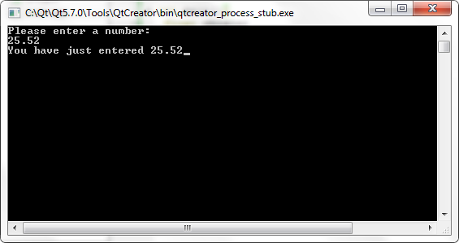
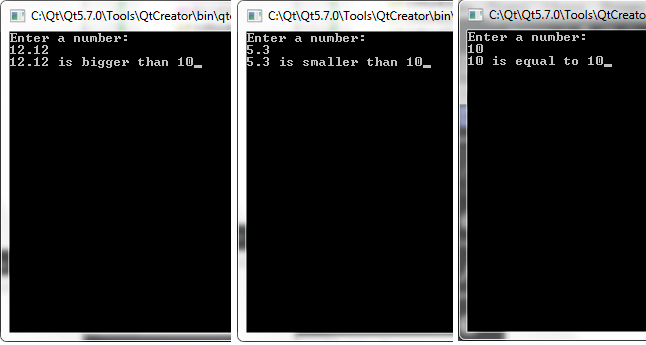

Урок C++ №4
В этом уроке вы узнаете о
ветвлении в C или if-else
В предыдущих уроках мы писали программы, делающие одно и то же, сколько раз их не запускай.
В этом уроке я вам расскажу, как заставить программу выполнять разные действия: или то или другое.
Итак, в чем суть ветвления - при разных условиях программа выполняет разные действия.
Мы можем написать программу, выводящую то же число, что пользователь и вводит. Например:
- #include<iostream>
-
- int main(){
- float chislo;
- std::cout<<"Please enter a number: \n";
- // "\n" значит переход на строку
- std::cin>>chislo;
- std::cout<<"You have just entered "<<chislo;
- }
Код идущий после символов // не считается компилятором за инструкцию и называется комментарий
Попробуйте запустить этот код. Программа просит ввести число и потом его отобразит.

Программа требует число от пользователя и записывает это число в переменную.
Тип переменной float гласит, что переменная chislo дробная.
После ввода переменная chislo выводится на екран с помощью std::cout;
Инструкция if
Давайте узнаем, больше ли число, введенное пользователем, чем 10. Если да, то сообщим об этом пользователю.
Получится ветвление программы: если chislo>10 то мы выводим информацию, а если нет, то программа небудет ничего выполнять.
На языке C++ это будет выглядеть прямо так:
- if( chislo>10 ){сообщение;}
Это просто понять: if переводится как "если"; в скобках указывается условие;
затем идет составная инструкция, которая выполнится если выполнится и условие.
Вот список всех условий:
- переменная > значение - больше ли переменная чем значение?
- переменная < значение - меньше ли переменная чем значение?
- переменная == значение - равна ли переменная значению?
Тут обратите особое внимание: двойное равно == это условие, а = это оператор присваивания и к проверке условия он значения не имеет.
- переменная != значение - не равна ли переменная значению?
- переменная >= значение - больше или равна ли переменная значению?
- переменная <= значение - меньше или равна ли переменная значению?
Давайте рассмотрим эту программу:
- #include<iostream>
-
- int main(){
- float chislo;
- std::cout<<"Enter a number: \n";
- std::cin>>chislo;
- if(chislo>10){std::
cout<<chislo<<" is bigger than 10";}
- if(chislo<10){std::cout<<chislo<<" is smaller than 10"
;}
- if(chislo==10){std::cout<<chislo<<
" is equal to 10";}
- }
-
if(chislo==10){инструкция;}
можно заменить без ошибки компилятора на
if(chislo==10)инструкция;
Действительно, зачем писать составную нструкцию, если в ее состав входит всего одна инструкция.
Итак, мои картинки:

Инструкция if-else
Вы поняли инструкцию if. Осталось рассказать одну её возможность:
если написать
- if(условие){}
- else{}
то в составной инструкции с именем else код будет выполнятся, если
не выполнился в блоке if. Например if(a==10){что-то;}else{} , где
else выполнится при a!=10.
На всякий случай расскажу вам данную информацию:
если после подключения библиотеки iostream указать
- using namespace std;
то вам не надо будет писать std:: каждый раз!